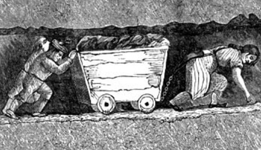
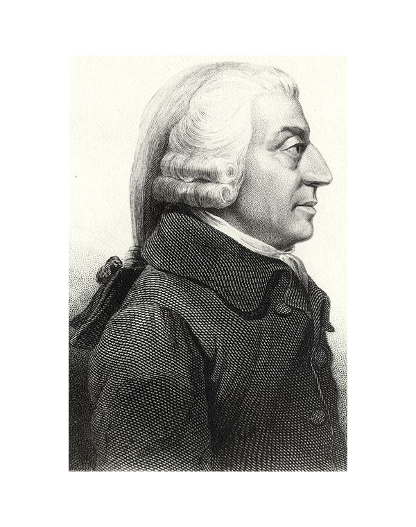
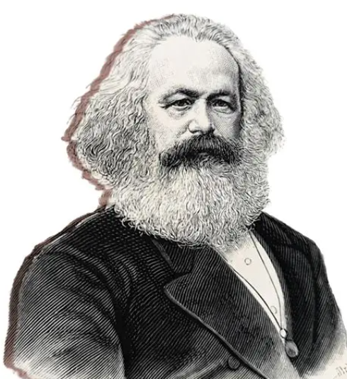

Four jobs. You must pick one.
Click the arrows — read all four before you decide.
OPTION A
Civil servant
¥9,000 / month
Write your choice on a slip of paper. Do not explain it yet.
| 1 | Xiao Li left the factory for delivery work: the pay is higher. | which factor? |
| 2 | Wang jie turned down a night shift: she cares for her son. | which factor? |
| 3 | Chen wanted to be a doctor but failed the entrance exam. | which factor? |
| 4 | Lao Zhang moved south for construction work at double the wage. | which factor? |
| 5 | Liu chose a state firm: less money, but the job is secure. | which factor? |
| 6 | May refused the mine, even though it paid the most. | which factor? |



| Who | Gains | Pays |
|---|---|---|
| Worker | becomes skilled quickly; higher output can mean higher pay | boredom and monotony; narrow, hard-to-move skill |
| Firm | lower cost per unit; faster training; less waste | output stops if one link fails; quality can slip |
| Economy | more output from the same resources | vulnerable if that one industry declines |
1. An occupation is chosen on the whole package: plus non-wage factors.
2. The wage rate is pay per ; overtime, bonuses and commission are also wage factors.
3. Three constraints narrow the choice set: qualifications, and health or personal circumstances.
4. Division of labour splits production into tasks, so each worker and output per worker rises.
5. The cost is and narrow skills — so dull or dangerous jobs must pay a premium.